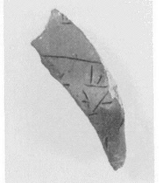
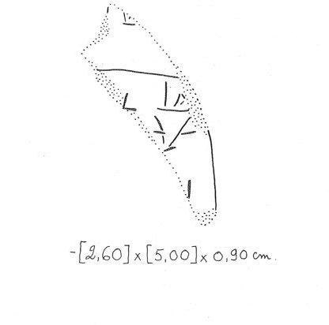

1500-1450 BCE
Line breaks match the inscription.
Line breaks match the inscription.
Line breaks are logical, e.g. to represent a list.
Line breaks are logical, e.g. to represent a list.
Schoep 2002, type Ia (mixed commodities)
| side.line | statement | logogram | number | fraction |
| supra mutila | ||||
| .1 | ]* 401VAS +[ ][ {* 649 } | |||
| .2 | ] vacat [ | |||
| . | vacant | |||
| _____________________________________________________________________ | ||||
| .3 | ] J | |||
| .3 | *401VAS+RA {*652}[ | |||
| .3 | ] 1 | |||
| infra mutila | ||||
 *401VAS 2-handled
cup
*401VAS 2-handled
cup
Commentary © John Younger